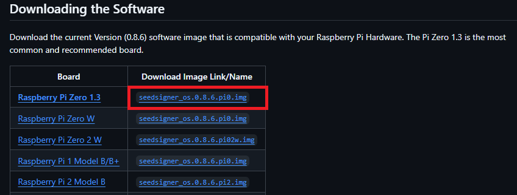
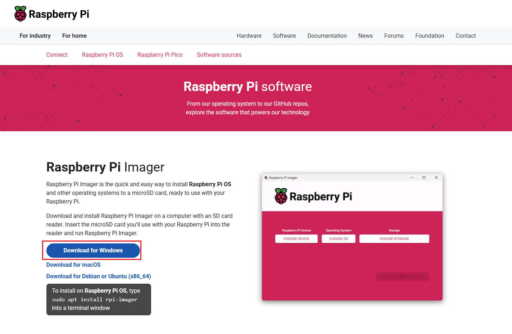

시작하기
이 가이드는 SeedSigner OS 이미지를 준비하고 Raspberry Pi Imager를 사용해 microSD 카드에 플래시한 뒤, 부팅 및 기본 동작을 검증하는 방법을 안내합니다.
준비물
- 시드사이너
- microSD 카드
- USB 카드 리더기
1. microSD 카드 준비
패키지에 동봉된 USB 카드리더기에 microSD 카드를 장착합니다.
- 카드가 올바른 방향으로 삽입되었는지 확인합니다.
2. SeedSigner 이미지 준비
PC에서 SeedSigner OS 이미지를 다운로드합니다.
-
SeedSigner OS 최신버전 다운로드 링크 👉
GitHub Releases
 - Raspberry Pi Zero 1.3 버전에 맞게 파일을 다운로드합니다.
.pi0.img - [선택사항] 릴리스 노트의 체크섬으로 무결성을 검증합니다.
3. Raspberry Pi Imager 설치
Raspberry Pi Imager 를 설치합니다.
-
Raspberry Pi Imager 다운로드 링크 👉
Raspberry Pi Imager
 사용하고 계신 운영체제에 맞게 다운로드하여 설치합니다.
(Windows, macOS, Ubuntu 지원)
- 설치를 진행합니다.
Raspberry Pi Imager 실행 및 Flash 준비
Raspberry Pi Imager를 실행합니다.
장치 선택을 눌러, 아래로 스크롤하여 Raspberry Pi Zero 를 선택합니다.
운영체제 선택을 눌러, 아래로 스크롤하여 사용자 정의 사용 항목을 선택합니다.
다운로드하였던 SeedSigner OS의 .pi0.img를 선택합니다.
저장소 선택을 눌러, SD Card 영역(8GB 가량)을 선택합니다.
SeedSigner 설치 준비가 완료되어 "다음" 버튼이 활성화 됩니다.
OS 커스터마이징 설정을 적용하시겠습니까? 팝업이 나타나면 "아니요" 를 클릭합니다.
데이터 지워짐 -> "예"를 클릭합니다.
SeedSigner OS가 SDCard에 설치가 완료되었습니다.
4. SeedSigner 동작확인
SeedSigner에 SDCard를 삽입한 뒤, 전원을 연결하여 부팅을 확인합니다.